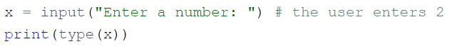

a = 3.0
b = 4.0
c = (a ** 2 + b ** 2) ** 0.5
print("c =", c)c = 5.0Мета: освоїти роботу зі змінними та операції вводу і виводу
Перед виконанням лабораторної роботи необхідно опрацювати матеріал Лекції 3.
У лабораторній роботі використано матеріали python institute.
input().int(), float(), string().Написати програму, яка вводить довжини катетів \(a\) та \(b\) прямокутного трикутника та обчислює його гіпотенузу \(c\).
a = 3.0
b = 4.0
c = (a ** 2 + b ** 2) ** 0.5
print("c =", c)c = 5.0Написати програму, яка обчислює значення функції Гауса: \[f(x) = \frac{1}{\sigma \sqrt{2 \pi}} e^{-\frac{(x-\mu)^2}{2\sigma^2}}\]
import math
# Визначаємо функцію Гаусса
def gauss_function(x, mean, std_dev):
return (1 / (std_dev * math.sqrt(2 * math.pi))) * math.exp(-0.5 * ((x - mean) / std_dev) ** 2)
# Приклад використання
x = 1.0 # значення змінної x
mean = 0.0 # математичне сподівання (середнє значення)
std_dev = 1.0 # стандартне відхилення
# Обчислення значення функції Гаусса
result = gauss_function(x, mean, std_dev)
print(f"Значення функції Гаусса для x={x}, mean={mean}, std_dev={std_dev}: {result}")Значення функції Гаусса для x=1.0, mean=0.0, std_dev=1.0: 0.24197072451914337Ось невелика розповідь:
Якось Джон (John) мав три яблука, Мері (Mary) мала п’ять яблук, а Адам (Adam) мав шість яблук. Усі вони були дуже щасливі та жили довго. Кінець історії.
Ваше завдання:
створіть змінні: john, mary, і adam;
надайте значення змінним. Значення повинні дорівнювати кількості фруктів, якими володіють Джон, Мері, і Адам відповідно;
зберігши числа в змінних, виведіть змінні в один рядок і розділіть їх комами;
тепер створіть нову змінну з ім’ям totalApple, що дорівнює сумі трьох попередніх змінних;
вивести значення, збережене в totalapples, в консоль;
надрукувати рядок та ціле число разом в одному рядку, наприклад, “Загальна кількість яблук:” та total_apples|.
print(" exercise 2 ")
# Define variables for the number of apples
john = 3 # number of apples John has
mary = 5 # number of apples Mary has
adam = 6 # number of apples Adam has
# Print the variables in a single line, separated by commas
print(f"{john}, {mary}, {adam}")
# Create a new variable that equals the sum of the three previous variables
total_apples = john + mary + adam
# Print the value of the total_apples variable
print(total_apples)
# Print a string and the value of the total_apples variable together in one line
print(f"Total number of apples: {total_apples}") exercise 2
3, 5, 6
14
Total number of apples: 14Милі та кілометри – це одиниці довжини або відстані.
Враховуючи, що 1 миля дорівнює приблизно 1.61 кілометрам, напишіть програму, щоб вона перетворила:
милі у кілометри;
кілометри на милі.
Не змінюйте нічого в існуючому коді. Напишіть свій код у місцях, вказаних ###. Протестуйте вашу програму з даними, які надано у вихідному коді.
Зверніть особливу увагу на те, що відбувається всередині функції print(). Проаналізуйте, як ми надаємо кілька аргументів функції та як ми виводимо очікувані дані.
Зауважте, що деякі аргументи всередині функції print() є рядками (наприклад, "miles is", тоді як деякі інші є змінними (наприклад, miles).
kilometers = 12.25
miles = 7.38
# Перетворення миль у кілометри
miles_to_kilometers = miles * 1.61
# Перетворення кілометрів у милі
kilometers_to_miles = kilometers / 1.61
# Виведення результатів
print(miles, "миль це", round(miles_to_kilometers, 2), "кілометрів")
print(kilometers, "кілометрів це", round(kilometers_to_miles, 2), "миль")7.38 миль це 11.88 кілометрів
12.25 кілометрів це 7.61 мильПодивіться код у редакторі: він читає “плаваюче” значення, поміщає його у змінну з ім’ям x, і друкує значення змінної з ім’ям y. Ваше завдання - завершити код, щоб оцінити такий вираз:
\[3x^3 - 2x^2 + 3^x - 1\]
Результат має бути присвоєний y.
import math
# Зчитування значення з вводу
x = input("Enter a value for x: ")
x = float(x) # Перетворення введеного значення на тип float
# Обчислення виразу 3x^3 - 2x^2 + 3^x - 1
y = 3 * (x ** 3) - 2 * (x ** 2) + 3 ** x - 1
# Виведення результату
print("y =", y)Enter a value for x: 1y = 3.0Тестові данні
Приклад вводу
x = 0
x = 1
x = -1
Приклад виводу
y = -1.0
y = 3.0
y = -9.0
Код редактора містить коментарі. Спробуйте покращити його: додайте або видаліть коментарі там, де ви вважаєте це доречним (так, іноді видалення коментаря може зробити код більш читабельним) і змініть імена змінних там, де, на вашу думку, це покращить розуміння коду.
# This program computes the number of seconds in a given number of hours
# Number of hours for which we want to calculate the total number of seconds
hours = 2
# Number of seconds in one hour
seconds_per_hour = 3600
# Print the number of hours
print("Hours:", hours)
# Compute and print the number of seconds in the given number of hours
print("Seconds in", hours, "hours:", hours * seconds_per_hour)
# End of the program
print("Goodbye")Hours: 2
Seconds in 2 hours: 7200
Goodbyea змінено на hours, щоб ясніше показати, що це кількість годин.seconds змінено на seconds_per_hour, щоб відобразити, що це кількість секунд в одній годині.Ваше завдання – завершити код, щоб отримати результати чотирьох основних арифметичних операцій.
Результати мають бути виведені у консолі.
Можливо, ви не зможете захистити код від користувача, який хоче ділити на нуль. Пізніше ми взнаємо, як це зробити.
# Введіть значення для змінних a і b
a = float(input("Введіть значення для a: "))
b = float(input("Введіть значення для b: "))
# Запропонуйте користувачу вибрати арифметичну операцію
print("Оберіть арифметичну операцію:")
print("1. Додавання")
print("2. Віднімання")
print("3. Множення")
print("4. Ділення")
# Зчитування вибору користувача
operation = input("Введіть номер операції (1/2/3/4): ")
# Виконання обраної операції та виведення результату
if operation == '1':
# Виведення результату додавання
print("Додавання:", a + b)
elif operation == '2':
# Виведення результату віднімання
print("Віднімання:", a - b)
elif operation == '3':
# Виведення результату множення
print("Множення:", a * b)
elif operation == '4':
# Виведення результату ділення
# Перевірка на нуль, щоб уникнути помилки ділення на нуль
if b != 0:
print("Ділення:", a / b)
else:
print("Ділення: Не можна ділити на нуль")
else:
print("Некоректний вибір. Будь ласка, введіть 1, 2, 3 або 4.")
print("\nОсь і все, друзі!")Введіть значення для a: 2
Введіть значення для b: 2Оберіть арифметичну операцію:
1. Додавання
2. Віднімання
3. Множення
4. ДіленняВведіть номер операції (1/2/3/4): 1Додавання: 4.0
Ось і все, друзі!Ваше завдання – завершити код, щоб оцінити такий вираз: \[\frac{1}{x + \frac{1}{x + \frac{1}{x + \frac{1}{x + \frac{1}{x}}}}}\]
Результат має бути присвоєний y.
Ви можете використовувати додаткові змінні для зменшення виразу (але це не обов’язково). Ретельно тестуйте свій код.
Тестові дані
x = 1
y = 0.6000000000000001
x = 10
y = 0.09901951266867294
x = 100
y = 0.009999000199950014
x = -5
y = -0.19258202567760344
# Введіть значення для x
x = float(input("Enter value for x: "))
# Обчислення виразу
# Розкладаємо вираз на декілька кроків для зручності
# Починаємо з самого внутрішнього виразу
inner4 = x + 1 / x
inner3 = x + 1 / inner4
inner2 = x + 1 / inner3
inner1 = x + 1 / inner2
y = 1 / inner1
# Виведення результату
print("y =", y)Enter value for x: 100y = 0.009999000199950014inner4: Обчислює найглибший вкладений вираз у дробі.inner3: Використовує результат inner4 для обчислення наступного рівня.inner2: Використовує результат inner3 для обчислення наступного рівня.inner1: Використовує результат inner2 для обчислення наступного рівня.y: Обчислює остаточний результат виразу, використовуючи inner1.Ваше завдання - підготувати простий код, здатний порахувати час закінчення періоду часу, вираженого в кількості хвилин (воно може бути як завгодно великим). Час початку вказується у вигляді пари годин (0..23) та хвилин (0..59). Результат повинен бути надрукований на консолі.
Наприклад, якщо подія починається о 12:17 і триває 59 хвилин, вона закінчується о 13:16.
Не турбуйтеся про будь-які недоліки у вашому коді –- це нормально, якщо він приймає неприпустимий час -– найважливіше, що код видає дійсні результати для правильних вхідних даних.
Ретельно перевірте код. Підказка: використання оператора % може бути ключем до успіху.
# Введіть час початку події у правильному форматі
hour = int(input("Введіть час початку (години, 0-23): "))
mins = int(input("Введіть хвилини початку (хвилини, 0-59): "))
dura = int(input("Введіть тривалість події (хвилини): "))
# Обчислення кінцевого часу
total_minutes = hour * 60 + mins + dura
end_hour = (total_minutes // 60) % 24
end_minute = total_minutes % 60
# Виведення результату
print(f"Подія закінчиться о: {end_hour:02}:{end_minute:02}")Введіть час початку (години, 0-23): 12
Введіть хвилини початку (хвилини, 0-59): 17
Введіть тривалість події (хвилини): 59Подія закінчиться о: 13:16Тестові дані
Приклад вводу:
12
17
59
Очікуваний результат: 13:16
Приклад вводу:
23
58
642
Очікуваний результат: 10:40
Приклад вводу:
0
1
2939
Очікуваний результат: 1:0
Який вивод наступного фрагмента? 
Який очікуваний результат наступного фрагмента? 
input("Enter a number: "): Ця частина коду відображає на екрані повідомлення “Введіть число”. Це підказка для користувача, яке число він має ввести.int(): Ця функція бере введений текст (рядок) і перетворює його на ціле число. Тобто, рядок “2” перетворюється на число 2.x. Тепер змінна x містить числове значення 2.x * "5": Ця частина коду трохи незвичайна. Вона означає, що рядок “5” повторюється стільки разів, яке число зберігається в змінній x.x дорівнює 2, рядок “5” повторюється два рази. Тобто, ми отримуємо новий рядок “55”.print(): Ця функція виводить на екран результат попередніх операцій. В нашому випадку, вона виводить рядок “55”, який ми отримали в результаті повторення рядка “5”.x = int(input("Enter a number: ")) # Пользователь вводит 2
print(x * "5")Enter a number: 255print(type(x)): Ця команда виводить тип даних, який зберігається в змінній x. Оскільки ми зберегли рядок, на екран буде виведено: <class ‘str’>. Це означає, що тип даних змінної x - це строка (string).
x = input("Enter a number: ") # the user enters 2
print(type(x))Enter a number: 2<class 'str'>